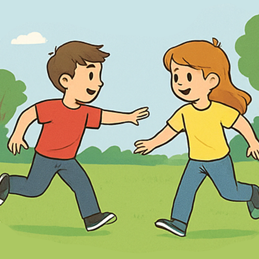
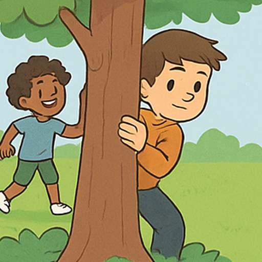
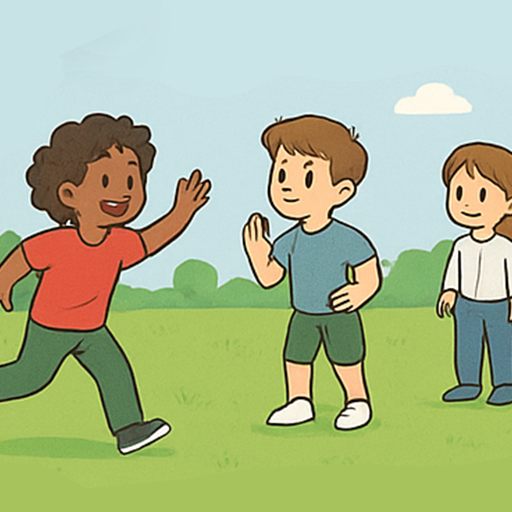
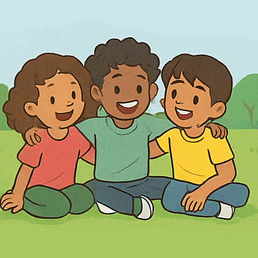

Догонялки — это активная игра на скорость и ловкость
Игроки бегают друг за другом, стараясь догнать и "осалить" другого

Иногда спасение — это резкий поворот или прятки за препятствием!
В догонялках важна стратегия: не только быстро бегать, но и хитро уворачиваться.

Есть много видов догонялок: обычные, "горячая точка", "заморозка" и другие.
Каждый вариант делает игру ещё веселее и интереснее.

Весёлые крики, смех и совместные приключения сближают!
Догонялки — отличный способ завести новых друзей и провести время на свежем воздухе.